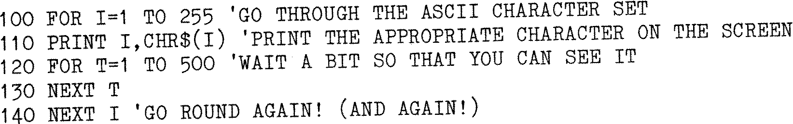

80-Bus News |
May–June 1983 · Volume 2 · Issue 3 |
| Page 14 of 59 |
|---|
This is an extremely handy command and allows program lines to be spread or packed, particularly after editing; new lines can be inserted between existing lines. To use RENUM, type:
RENUM [<A>[<B>[,<I>]]]
where A is the new line number of the first line to be renumbered, B, the line number, numbers below which will NOT be renumbered. I is the increment. Default values for A and I are 10, and if B is omitted, the whole program will be renumbered in sequence. For example:
RENUM – renumbers the whole program in increments of 10, starting with line 10.
RENUM 150,,20 – renumbers the whole program which will then start at 150 and line
numbers will be incremented by 20.
RENUM 1000,100,50 – renumbers lines from 100 so that they start at 1000,
incrementing by 50.
Note that RENUM alters correctly all line numbers appearing after a GOTO, GOSUB, IF....THEN, ON....GOTO or ON....GOSUB. RENUM cannot be used to change the order of program lines nor can it (in common with AUTO) create line numbers greater than 65529; an error message will result!
Apart from the normal use of ‘REM’ after the line number for program comments, it is possible to use a single quote (') which may be placed anywhere on the line, after the line number. Everything on the same line which follows the “ ' ” will be ignored; this can be particularly useful for detailed comments – for example:
The EDIT command in MBASIC is quite sophisticated and only a few of its features will be covered here. Editing can be carried out both while the program is being typed in and on the finished program. Single characters can be changed either by typing <backspace> or <delete>. In the latter case, the deleted letter is enclosed by backslashes (\) and a carriage return occurs if there are no preceding characters. In this version of MBASIC, the typing of <^A> instead of the <cr> at the end of the line puts you into EDIT mode and allows the use of almost all the features of the EDIT command. If, having typed a <cr> you wish to edit the line just typed, use ‘EDIT .’ – the full-stop indicates to the EDIT command that the current line is to be edited.
I Inserts new characters into the line which is being edited (to a maximum of 255 characters including the original text). Insertion is stopped by typing <esc> or <altmode>, depending on your keyboard.
<del> The delete key typed during an Insert command will delete the character to the left of the cursor.
<cr> If a carriage return is typed during an Insert command, the effect is to terminate the Insertion and print the rest of the line; the edited version will then replace the original.
X The action of the X command is similar to the I command, but it causes the printing of all characters to the right of the cursor, then it enters the ‘I’ mode. This is a useful facility when new statements are to be added to the end of an existing line (but don’t forget the colon which is used as a statement separator).
H The H command has a similar action to the X command but it deletes, rather than prints all characters to the right of the cursor, before entering the I mode.
| Page 14 of 59 |
|---|